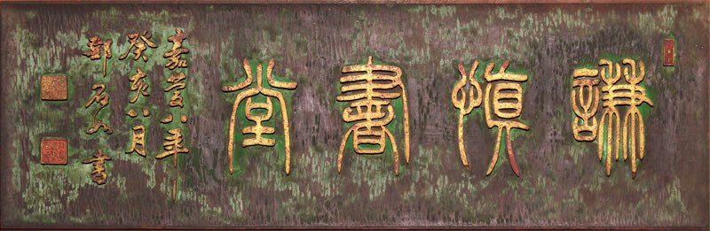

リニューアル案（プロトタイプ） 画像・本文は仮のものです
MENU
▶ HOME
▶ 謙慎書道会とは
▶ 7賢人
▶ 謙慎書道会展
▶ 出品規定
▶ お知らせ
▶ リンク
▶ お問い合わせ

第88回 謙慎書道会展
直近の展覧会
第一会場
東京都美術館
会期
2026年3月18日（水）～3月23日（月）
AM9：30～PM5：30
（入場は閉会の30分前まで。
最終日はPM2：00閉会）
入場料
無料
▶ 開催概要を見る
▶ 過去の展覧会
NEWS
お知らせ
▶ バックナンバー
2025/12/15
九州沖縄展の開催情報を更新しました。
2025/12/15
有山社書展の開催情報を更新しました。
2025/12/15
中国書画名品展Ⅱの開催情報を更新しました。
2025/11/20
西部展の開催情報を更新しました。
2025/11/20
甲信北越展の開催情報を更新しました。
2025/11/4
第88回展の出品規程を公開しました。
2025/11/4
組織・役員のページを更新しました。
7賢人
会の礎を築いた七人
▶ 七人すべて見る
西川寧
1902–1989
青山杉雨
1912–1993
上條信山
1907–1997
殿村藍田
1913–2000
淺見筧洞
1915–2006
成瀬映山
1920–2007
小林斗盦
1916–2007
公募・出品をお考えの方へ
出品規定・出品申込の手順をご案内しています。
▶ 出品規定を見る
◀ 前へ
閉じる
次へ ▶